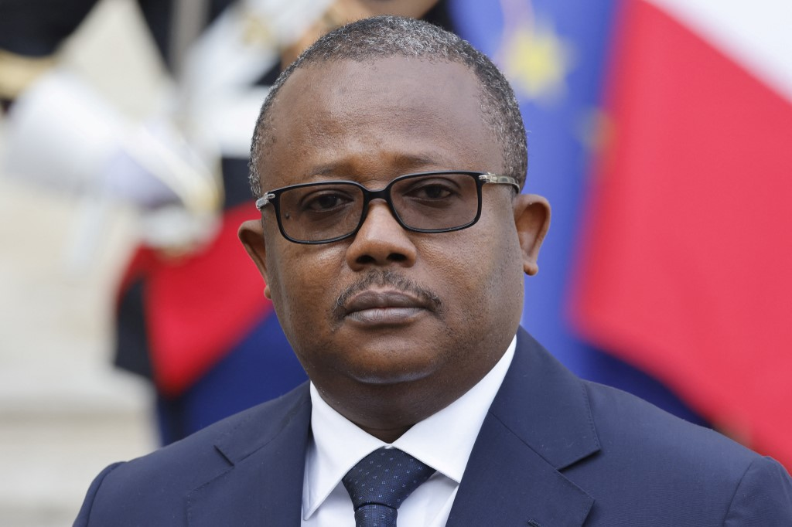

On February 1,
Guinea-Bissau's government palace was attacked
during a scheduled cabinet meeting. The shooting lasted for five hours, and at least eight people were killed. President Umaro Sissoco Embaló survived the attempted coup. "It wasn’t just a coup. It was an attempt to kill the president, the prime minister and all the cabinet," Embaló said. Six days after the attempt, a radio station critical of the government was attacked and its equipment destroyed.
Since 2000, the West African nation has seen 10 coup attempts, higher than any other nation globally. While only 2 of these attempts have been successful, they have contributed to ongoing political instability in the region. Only one elected president (José Mário Vaz, elected in 2014) has ever completed a five-year term in office.
Guinea-Bissau way ahead of other countries in number of coup attempts
Guinea-Bissau's 10 attempts are followed by Venezuela and Mauritania with 5 attempts each
Data: Cline Center
The first democratically elected President of Guinea-Bissau, Kumba Yalá, is appointed in January 2000. That November, Yalá demotes Army General Ansumane Mané who had led the bloody civil war of 1998. Dissatisfied with this decision, Mané places Yalá's chief of staff under house arrest and declares himself head of the armed forces. Violence breaks out in the capital. Mané is forced to flee and eventually killed.
Yalá dismisses prime minister Faustino Imbali and foreign minister Antonieta Rosa Gomes without proper explanation. His government states that it thwarted a coup attempt organised by army officers due to concerns regarding Yalá's increasingly volatile and regressive rule.
The first successful coup attempt. Yalá suspends parliament for nearly a year following a vote of no confidence in his presidency. A 32-man junta led by Army General Veríssimo Correia Seabra stages a military coup and arrests Yalá. He is later forced to resign. The coup is welcomed by the people, and the country's economy starts improving under interim civilian president Henrique Rosa.
Exiled former president Kumba Yalá returns and claims that he is still the legitimate head of state. He forces a brief occupation of the Presidential Palace but ultimately concedes to João Bernardo Vieira who wins the election held in June.
Vieira dissolves parliament in a move to "bring an end to the political crisis". The Army discloses that certain military officers led by Navy Chief of Staff José Américo Bubo Na Tchuto attempted a coup. Na Tchuto is placed under house arrest.
After Vieira's political party wins a strong majority in the new parliament, his residence is attacked by members of the armed forces. Vieira accuses Army Chief of Staff Batista Tagme Na Waie of the attempt. Four months later, Tagme Na Waie is killed in a bomb blast. Vieira is shot dead by renegade soldiers later on the same day. Many link the assassination to the drug trade. Malam Bacai Sanhá is elected President in June.
Military officers place Prime Minister Carlos Gomes Júnior under house arrest. Army Chief of Staff Zamora Induta is taken to a military camp and replaced by Deputy Army Chief of Staff Antonio Ndjai. Following widespread citizen protests, Ndjai threatens to kill Gomes Júnior. Gomes Júnior is released the next day and moves to Portugal for several months but does not make parliamentary changes on return.
The second successful coup attempt. President Sanhá dies in January 2012 from complications of diabetes. Following unrest regarding military reform policies, army officials led by Chief of Staff Ndjai attack interim president Raimundo Pereira and both leading presidential contenders including former prime minister Gomes Júnior. Periera and Gomes Júnior are arrested. Foreign embassies are sealed off and roads in and out of the capital are blockaded. Other members of the civilian government are ordered to turn themselves over to the Army. Manuel Serifo Nhamadjo is nominated as transitional president.
The coup has disastrous effects on the country's economy. GDP drops by almost 2% in a single year. Diplomatic relations also suffer as neighbouring Senegal closes its borders and the UN imposes travel bans. After military officials suspected of involvement in drug trafficking seize power as a result of this coup, the cocaine trade picks up heavily in the country, giving it the name "the cocaine coup".
An air force base is attacked, leaving seven killed. The gunmen are linked to the regime overthrown in the April coup. The government calls it a "foiled attempt at destabilisation" and accuses Gomes Júnior of conspiring with the government of Portugal.
Both successful coups have divergent effects on GDP
Annual GDP % change. The 2003 coup, welcomed by the public, leads to an increase in GDP whereas the 2012 coup leads to a drastic drop
Data: World Bank
The country continues to be in a state of constant tension between its civilian government and its military, with the added pressure of the drug trade. While it is unclear who perpetrated the attempt this year, President Embaló and his government appear to resume their focus on combating drug trafficking and corruption.
Umaro Sissoco Embaló
I came across Cline Center's Coup D'état Database via Jeremy Singer-Vine's Data Is Plural newsletter. The attempted assassination of Guinea-Bissau's president was still doing rounds in the news, and I was curious to see how the history of political instability in the country has progressed over the years. I was also learning D3 at the time, and since the story called for a chronological narrative, I decided to make it a scrollytelling project.
Project Type: {{ page.type }}
Role: data storytelling, data visualization
Tools: Figma for prototyping, D3.js for graphics
Date: November 2022
Sources: Cline Center Coup D'état Database, World Bank Data